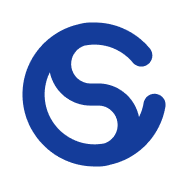

01
信息孤岛，数据断层
仪器已是数显，很多厂仍人工读数、填写纸质原始记录。纸质难查，容易涂改、丢失。线已经在挤塑，检验申请还在路上；结果出来还要手工录入 ERP 才能出库。

数蚕LIMS电缆厂实验室
实验室业务管理系统
驱动电缆生产质量数字化，
实现从原材料入库到成品出厂的全流程质量闭环。
现状
仪器已经数显。记录、判定、放行和追溯，很多仍靠人。
01
仪器已是数显，很多厂仍人工读数、填写纸质原始记录。纸质难查，容易涂改、丢失。线已经在挤塑，检验申请还在路上；结果出来还要手工录入 ERP 才能出库。
02
检验员大量时间花在抄数、算绝缘厚度平均值，再录入电脑做表。每批出货都要质量证明书，定制订单手工做表容易错填、漏填。
03
国网、南网招标对质量追溯要求极高。数据全靠人工录入，就有被润色的可能。赶进度时“先放行、后补测”，没有强制流程。
04
高压发生器、老化试验箱又多又贵。检定、校准没有系统提醒，过了有效期还在用。数据也看不出某批绝缘料的规律偏差，或哪台挤塑机厚度波动大。
05
感官判断、复杂制样靠老师傅。人一离职，新人没有知识库，检测标准执行不统一。岗位琐碎重复，人也难留住。
06
首检结果不能实时回到车间。质量一偏，往往等整盘做完才发现，整盘报废。原材料价格高的时候，这种事后检验非常贵。
优势 01
国家、行业、企业标准放进同一套引擎。录入之后当场比对，厚度和电阻按公式自算。
优势 02
打通仪器。采集、计算、判定一次走完，原始数从设备直传到系统。
优势 03
零代码、所见即所得。检验原始记录和报告，按客户现在的格式交付。
优势 04
用批次号或条码，把这根电缆和人、机、料、法、环绑在一起。抽样、送接样、检测到留样，一条线可回放。
优势 05
按 ISO/IEC 17025 的结构，把人、机、料、法、环放进系统。
数据保持原始、防篡改，并且可追溯。
优势 06
从待检到出库，每一批的质量和进度放在同一块看板上。下面的数字是界面示意。
优势 07
用标准 API 把生产指令和质量结果接成一条闭环，不再在系统之间抄一遍。
优势 08
Web 与移动端覆盖同一套任务、记录和报告。现场录入，办公室审核，手机上能查到刚出的结果。
优势 09
为电缆厂准备的“标准化 + 定制化”。试错成本压低，标准一变，系统继续维护。
功能模块
接收、登记、发样、检测、还样，直到存储或销毁，每一步都有记录。
二维码和编码内容可定制。扫码调出样品全信息，配合移动端记录流转。
委托登记、试验检测、报告处理可勾选、可调序，系统流程跟着实际走。
直连主流设备，或用协议、蓝牙、图像识别，让老设备把数回传上来。
任务一键接收，现场采集，逾期任务自动提醒。
原始记录和检测报告的字段点配完成。需求变更不靠二次开发。
按预设标准校核结果，自动判定，生成规范化报告。
电子签名与 CMA 签章在线完成，报告不用等纸质流转。
手机上发起和处理审批，办公室不在现场也能签发。
任务进度、样品流转和最终报告，手机或小程序随时可查。
设备校准状态沿链路管理。逾期自动预警，避免过期设备继续出数。
用户、角色、部门、菜单级授权。各岗位在自己的工作台里协作。
产品价值
让实验室的流程、效率、数据与交付，实现数字化闭环管理。